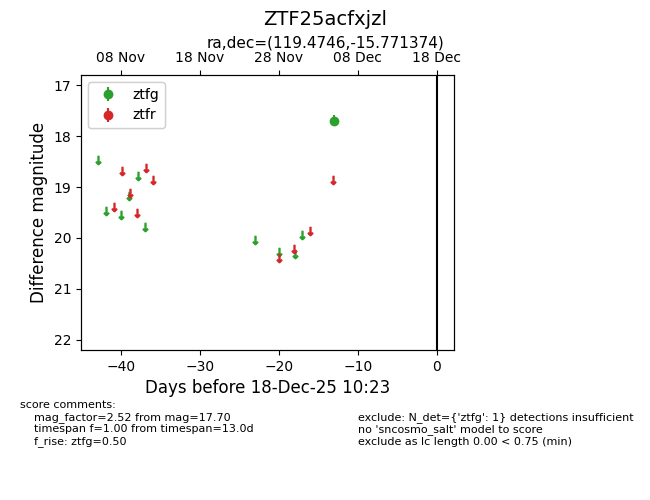
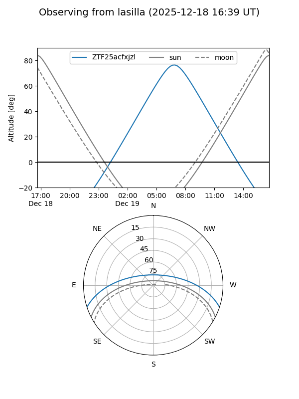
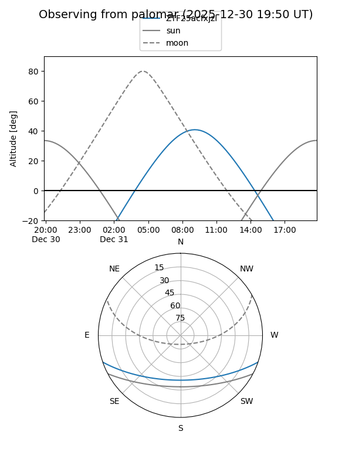

ZTF25acfxjzl
Target ZTF25acfxjzl at 2025-12-31 18:00
Aliases and brokers:
FINK: link
Lasair: link
ALeRCE: link
alt names
ZTF25acfxjzl (ztf,fink_ztf)
Coordinates:
equatorial (ra, dec) = 119.4746,-15.77137
equatorial (HMS+DMS) = 07:57:53.91,-15:46:16.95
galactic (l, b) = (234.6532,+6.94797)
Flags:
Photometry:
last ztfg=17.70
1 ztfg detections
Lightcurve

Visibility


Additional plots